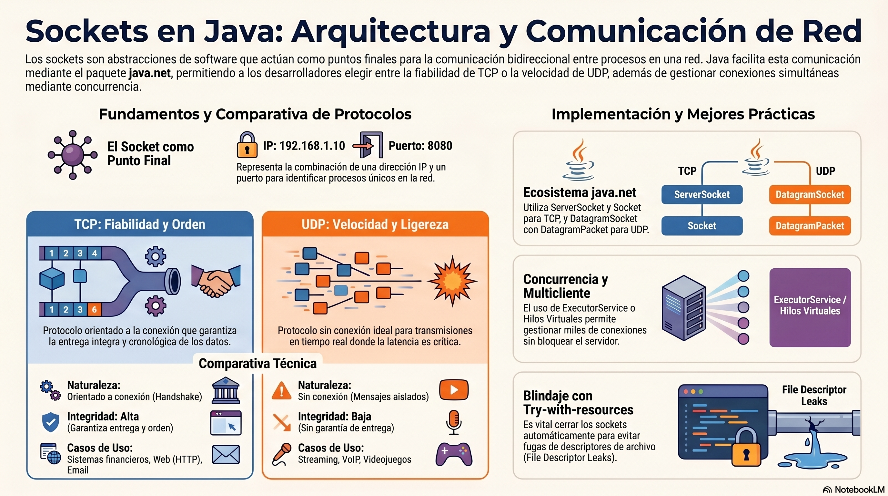

La evolución del desarrollo de software contemporáneo exige una comprensión profunda de las arquitecturas distribuidas. En la actualidad, el paradigma de aplicaciones monolíticas aisladas ha sido reemplazado casi en su totalidad por sistemas interconectados que requieren transferir datos a través de redes globales. La presente investigación aborda de manera exhaustiva la programación de Sockets en el lenguaje Java, proporcionando un análisis riguroso de sus fundamentos teóricos, su implementación práctica a través del paquete java.net, el manejo avanzado de la concurrencia y la integración con interfaces gráficas de usuario (GUI) mediante el marco de trabajo SWING. El análisis se desarrolla bajo los preceptos del código limpio (Clean Code) y la arquitectura de software robusta, asegurando que los conceptos sean directamente aplicables en entornos industriales y académicos.
1. Concepto de Sockets: El Núcleo de la Comunicación Interprocesos
La comunicación entre procesos (Inter-Process Communication, IPC) a través de una red informática se fundamenta en un concepto arquitectónico clave: el Socket. Un socket no es una pieza de hardware físico, sino una abstracción de software, un punto final lógico en un enlace de comunicación bidireccional entre dos programas que se ejecutan en una red [1, 2].
Para establecer un canal de comunicación viable, el sistema operativo necesita enrutar los datos de manera precisa. A nivel de infraestructura, una computadora posee una única dirección física o lógica (como una dirección IPv4 o IPv6), la cual identifica a la máquina dentro de la red global o local. Sin embargo, una computadora moderna ejecuta simultáneamente cientos de procesos interconectados (navegadores web, bases de datos, sistemas de mensajería). Si los datos de la red llegaran únicamente a la dirección IP, el sistema operativo no sabría a qué aplicación entregar dicha información. Es aquí donde interviene el concepto de “Puerto” (Port).
Un socket representa matemáticamente la concatenación de una Dirección IP y un Puerto (por ejemplo, 192.168.1.10:8080). Mediante una analogía del mundo real, la dirección IP funciona como la dirección postal de un gran edificio corporativo, mientras que el puerto actúa como el número de extensión telefónica de un departamento específico dentro de ese edificio. De este modo, un socket garantiza que los paquetes de datos no solo alcancen la máquina de destino, sino que se inyecten directamente en el espacio de memoria de la aplicación correcta [2, 3].
1.1 Diferencias Arquitectónicas: Protocolos TCP y UDP
En la capa de transporte del modelo de Interconexión de Sistemas Abiertos (OSI), el ecosistema Java permite operar principalmente con dos protocolos fundamentales, los cuales determinan las reglas de transmisión, integridad y control de flujo de los datos: el Protocolo de Control de Transmisión (TCP) y el Protocolo de Datagramas de Usuario (UDP). La elección entre uno u otro depende estrictamente de los requisitos del dominio del negocio.
| Característica Conceptual | Protocolo TCP (Transmission Control Protocol) | Protocolo UDP (User Datagram Protocol) |
|---|---|---|
| Naturaleza del Enlace | Orientado a la conexión. Se establece un circuito virtual sostenido antes de transmitir cualquier fragmento de información [4]. | Sin conexión. Los mensajes se envían de forma aislada sin verificación de estado previo [3]. |
| Integridad y Confiabilidad | Altamente confiable. El protocolo garantiza que ningún paquete se pierda, y que todos lleguen en el orden cronológico exacto en que fueron emitidos [4]. | No confiable. Los paquetes pueden perderse en el trayecto, duplicarse o llegar desordenados sin notificación alguna [5, 6]. |
| Control de Flujo | Implementa algoritmos de ventana deslizante y confirmación de recepción (ACK). Si un paquete falla, se retransmite automáticamente [7]. | Carece de control de congestión. El emisor transmite a la máxima capacidad posible independientemente del estado del receptor [7]. |
| Rendimiento y Latencia | Presenta una mayor latencia debido al proceso de establecimiento de conexión (Three-way Handshake) y la sobrecarga de los encabezados de verificación. | Extremadamente rápido y ligero, ideal para transmisiones donde la velocidad prevalece sobre la precisión absoluta [3]. |
| Casos de Uso Típicos | Sistemas financieros, transferencia de bases de datos, correos electrónicos, y la mayoría de las arquitecturas cliente-servidor corporativas. | Transmisión de voz sobre IP (VoIP), telemetría de sensores, videojuegos multijugador y streaming de video en tiempo real. |
1.2 El Modelo de Interacción Cliente-Servidor
La programación de sockets adopta casi universalmente el modelo Cliente-Servidor. Esta arquitectura establece una asimetría de responsabilidades funcionales. El servidor es una entidad de software que permanece pasiva, a la escucha continua en un puerto predeterminado, esperando solicitudes de conexión. Por el contrario, el cliente es la entidad proactiva; conoce la ubicación del servidor y toma la iniciativa para solicitar el establecimiento del canal de comunicación [4]. Una vez que el servidor acepta la solicitud del cliente, la distinción de roles se desdibuja parcialmente, permitiendo un intercambio de información bidireccional puro hasta que el socket se cierra.
Pregunta de Reflexión: Al considerar la infraestructura de un sistema de cotizaciones bursátiles en tiempo real, resulta imperativo analizar el impacto del protocolo de capa de transporte. ¿Por qué la transmisión de precios de acciones podría verse más beneficiada por la arquitectura de UDP a pesar de su falta de confiabilidad inherente en contraposición a las garantías de TCP?
2. Abstracción de Red en Java: El Ecosistema java.net
El diseño filosófico de Java, fundamentado en el principio de “Escríbelo una vez, ejecútalo en cualquier lugar” (Write Once, Run Anywhere), requiere abstraer las extremas complejidades del hardware y los sistemas operativos subyacentes [8, 9]. Interfaz con las tarjetas de red físicas, gestionar búferes del núcleo (kernel) del sistema operativo y resolver direcciones MAC son tareas manejadas por la Máquina Virtual de Java (JVM). El programador interactúa con una API orientada a objetos sumamente limpia a través del paquete java.net [1].
2.1 Entidades Principales del Paquete
El ecosistema separa sus clases en función del protocolo de transporte, asegurando que las restricciones estructurales se apliquen en tiempo de compilación:
- ServerSocket: Esta clase implementa la semántica del servidor TCP. Su única responsabilidad es escuchar las solicitudes de conexión entrantes y aceptarlas, operando como un despachador [1].
- Socket: Representa un canal de comunicación TCP ya establecido. Un programa cliente instancia esta clase explícitamente para conectarse. De manera simultánea, el servidor devuelve una instancia de esta misma clase cuando acepta a un cliente [1, 2].
- DatagramSocket: Es el punto de acceso para el protocolo UDP. A diferencia de TCP, una sola instancia de esta clase sirve tanto para enviar como para recibir paquetes, y no mantiene un estado de conexión sostenido [10].
- DatagramPacket: Representa el contenedor físico de los datos en UDP. Un datagrama contiene un arreglo de bytes (byte), la longitud del mensaje, y la ruta IP y puerto del destino o remitente [5, 6].
2.2 Arquitectura de Flujos de Datos (I/O Streams)
Comprender la transmisión de información en Java requiere dominar el concepto de flujos (Streams). Un Socket en Java no incluye métodos intrínsecos como enviarTexto() o recibirArchivo(). En su lugar, actúa como un conducto que expone dos flujos binarios fundamentales: el InputStream (flujo de entrada) y el OutputStream (flujo de salida) [11].
El paradigma de Java exige tratar las redes como si fueran operaciones de lectura y escritura de archivos locales. Los datos a través de TCP se transfieren puramente como bytes secuenciales. No obstante, procesar secuencias de bytes crudos para ensamblar cadenas de texto es algorítmicamente costoso y propenso a errores. Para resolver esto, la API emplea el patrón de diseño estructural Decorator (Decorador), permitiendo envolver estas tuberías básicas en clases de alto nivel que añaden capacidades avanzadas de decodificación y almacenamiento en búfer [12].
El encadenamiento de flujos típico para la lectura de texto desde un socket opera de la siguiente manera:
- Se extrae el flujo binario primario: socket.getInputStream().
- Se decodifican los bytes en caracteres Unicode utilizando el puente InputStreamReader.
- Se envuelve este lector en un BufferedReader, el cual almacena internamente bloques de datos en la memoria RAM, permitiendo acceder a ellos a través del eficiente método readLine(), el cual suspende la ejecución hasta que detecta un salto de línea (n) indicando el final de un mensaje [12].
Por el lado de la salida, el OutputStream se envuelve comúnmente en un PrintWriter, lo cual permite a la aplicación invocar métodos convenientes como println(), delegando a Java la compleja tarea de convertir el texto a la representación binaria adecuada antes de inyectarlo en la red [13, 14].
3. Implementación Práctica: Sockets TCP y Comunicación Bidireccional
La programación de Sockets TCP requiere una sincronización precisa entre el ciclo de vida del servidor y del cliente. La fiabilidad del protocolo radica en la imposibilidad de transmitir datos si el circuito virtual no está firmemente validado en ambos extremos [4].
3.1 Construcción del Servidor TCP
Para inicializar un servidor TCP, se debe instanciar la clase ServerSocket, proporcionando el número de puerto que se desea reclamar ante el sistema operativo. Una vez inicializado, el programa debe invocar el método accept(). El comportamiento de este método es bloqueante (blocking); suspende por completo la ejecución del hilo actual, manteniéndolo a la espera durante horas o días, hasta que se intercepta una solicitud de conexión entrante a través de la interfaz de red [13, 15]. Tras la validación del handshake TCP, accept() retorna una nueva instancia exclusiva de la clase Socket vinculada irrevocablemente a ese cliente específico.
Ejemplo de Código: Despliegue de un Servidor TCP Básico
El siguiente fragmento demuestra el proceso mediante los principios de código limpio, empleando la estructura try-with-resources para prevenir fugas de memoria y bloqueos de puertos [12, 16, 17].
import java.io.BufferedReader;
import java.io.IOException;
import java.io.InputStreamReader;
import java.io.PrintWriter;
import java.net.ServerSocket;
import java.net.Socket;
public class ServidorTCP {
private static final int PUERTO_SERVICIO = 8080;
public static void main(String args) {
// El bloque try-with-resources garantiza la liberación del puerto al finalizar.
try (ServerSocket socketServidor = new ServerSocket(PUERTO_SERVICIO)) {
System.out.println(" Desplegado y en estado de escucha en el puerto: " + PUERTO_SERVICIO);
// La ejecución del hilo se suspende indefinidamente en este punto.
try (Socket socketCliente = socketServidor.accept();
PrintWriter flujoSalida = new PrintWriter(socketCliente.getOutputStream(), true);
BufferedReader flujoEntrada = new BufferedReader(
new InputStreamReader(socketCliente.getInputStream()))) {
System.out.println(" Conexión establecida con la dirección remota: "
+ socketCliente.getInetAddress().getHostAddress());
// Emisión del mensaje de bienvenida inicial.
flujoSalida.println("Bienvenido a la red universitaria. Escriba 'SALIR' para desconectar.");
String mensajeCliente;
// Bucle infinito de lectura. readLine() es un método bloqueante.
while ((mensajeCliente = flujoEntrada.readLine())!= null) {
System.out.println(": " + mensajeCliente);
if ("SALIR".equalsIgnoreCase(mensajeCliente)) {
flujoSalida.println("Desconexión aceptada. Cerrando sesión.");
break; // Termina la comunicación y permite que el bloque try cierre los recursos.
}
// Transmisión de acuse de recibo.
flujoSalida.println("Servidor recibió el mensaje: " + mensajeCliente);
}
}
} catch (IOException e) {
System.err.println(" Falla crítica en la capa de red: " + e.getMessage());
}
}
}En este diseño, la instrucción PrintWriter(socketCliente.getOutputStream(), true) resulta de suma importancia. El segundo parámetro booleano activa el vaciado automático (auto-flush). En las redes TCP, los sistemas operativos agrupan los mensajes pequeños en búferes locales para maximizar la eficiencia de la tarjeta de red (Algoritmo de Nagle). Si no se realiza un vaciado (flush) explícito, los datos podrían quedar estancados en la memoria RAM del emisor, provocando un escenario de interbloqueo (deadlock) donde el cliente espera una respuesta que el servidor ha generado pero que aún no ha abandonado físicamente la computadora [18, 19].
3.2 Construcción del Cliente TCP
La contraparte requiere la invocación de la clase Socket. Al momento de la instanciación new Socket(“direccion_ip”, puerto), el entorno de ejecución de Java negocia automáticamente con el servidor para establecer el circuito TCP. Si la conexión falla (por un firewall, enrutamiento incorrecto o servidor inactivo), el programa lanza inmediatamente una excepción de tipo ConnectException [20].
Ejemplo de Código: Despliegue de un Cliente TCP Interactivo
import java.io.BufferedReader;
import java.io.IOException;
import java.io.InputStreamReader;
import java.io.PrintWriter;
import java.net.Socket;
import java.net.UnknownHostException;
public class ClienteTCP {
private static final String IP_SERVIDOR = "127.0.0.1"; // Entorno local (localhost)
private static final int PUERTO_SERVIDOR = 8080;
public static void main(String args) {
// Se instancian las tuberías de red junto con un escáner para leer el teclado del usuario.
try (Socket socketRed = new Socket(IP_SERVIDOR, PUERTO_SERVIDOR);
PrintWriter salidaServidor = new PrintWriter(socketRed.getOutputStream(), true);
BufferedReader entradaServidor = new BufferedReader(
new InputStreamReader(socketRed.getInputStream()));
BufferedReader tecladoUsuario = new BufferedReader(
new InputStreamReader(System.in))) {
// Interceptar e imprimir el mensaje de bienvenida del servidor.
String respuestaServidor = entradaServidor.readLine();
System.out.println(": " + respuestaServidor);
String entradaConsola;
System.out.print("Ingrese mensaje: ");
// Captura de datos desde la consola local y envío hacia la red.
while ((entradaConsola = tecladoUsuario.readLine())!= null) {
salidaServidor.println(entradaConsola); // Inyección en la tubería de red.
// Espera síncrona por la respuesta del servidor.
respuestaServidor = entradaServidor.readLine();
System.out.println(": " + respuestaServidor);
if ("SALIR".equalsIgnoreCase(entradaConsola)) {
break;
}
System.out.print("Ingrese mensaje: ");
}
} catch (UnknownHostException e) {
System.err.println(" La dirección IP proporcionada es inaccesible: " + e.getMessage());
} catch (IOException e) {
System.err.println(" Colapso de la comunicación I/O: " + e.getMessage());
}
}
}La combinación del cliente y el servidor expuestos previamente consolida una arquitectura de chat bidireccional simple. No obstante, esta aproximación algorítmica adolece de una limitación arquitectónica grave: el servidor es síncrono y de un solo hilo, lo que implica que solo puede atender a un único cliente a la vez, descartando por completo el paradigma moderno de los sistemas distribuidos a gran escala [13].
Ejercicio Práctico Propuesto: Se recomienda diseñar la implementación lógica necesaria para transformar el servidor TCP básico, de modo que en lugar de reflejar cadenas de texto (String), intercambie objetos serializados mediante ObjectOutputStream y ObjectInputStream. Resulta vital analizar el orden de inicialización de estos flujos de objetos, ya que una instanciación cruzada puede inducir a un estado de interbloqueo estructural conocido en la literatura técnica como Object Stream Deadlock [21, 22].
4. Implementación de UDP: Manipulación Cruda de Datagramas
Para aplicaciones que demandan el mínimo retraso posible, el protocolo UDP elimina toda la maquinaria de establecimiento de sesiones, validación matemática de integridad secuencial y acuses de recibo. La comunicación se reduce a encapsular información atómica y transmitirla hacia la interfaz de red [3, 7].
4.1 La Clase DatagramPacket y la Arquitectura de Búferes
En el entorno UDP de Java, no existen abstracciones de flujos continuos (InputStream/OutputStream). La API requiere que el desarrollador manipule matrices de bytes (byte) directamente. Un mensaje debe ser convertido de su representación en caracteres a su equivalente binario antes de la transmisión.
El objeto DatagramPacket funciona como el contenedor lógico de la información. Para realizar una transmisión, se debe construir un DatagramPacket especificando el contenido (arreglo de bytes), la cantidad exacta de bytes a enviar, la dirección de la máquina destino (InetAddress) y el puerto correspondiente [5, 23].
Por el contrario, en el extremo receptor, se preasigna un bloque de memoria contigua estática (búfer vacío) y se empaqueta en un DatagramPacket. Cuando el método receive() de la clase DatagramSocket intercepta un mensaje físico de la red, procede a sobrescribir la matriz de bytes interna del paquete con los datos recién llegados [3, 24].
4.2 Código Estructural: El Paradigma Receptor-Emisor
A diferencia de TCP, en UDP no se utilizan las clases ServerSocket ni Socket. Ambos extremos de la comunicación emplean exclusivamente la clase DatagramSocket. La única diferencia radica en la configuración de la instancia: el nodo que espera recibir información debe instanciar el socket enlazándolo a un puerto numérico explícito new DatagramSocket(puerto), mientras que el nodo que solo desea emitir puede usar un puerto efímero dinámico invocando el constructor sin parámetros new DatagramSocket() [10].
Ejemplo de Código: Nodo Receptor UDP (Servidor Analógico)
import java.net.DatagramPacket;
import java.net.DatagramSocket;
import java.net.InetAddress;
public class ReceptorUDP {
private static final int PUERTO_RECEPCION = 4445;
private static final int TAMANO_BUFFER = 1024; // Limitación física de 1 KB
public static void main(String args) {
// Enlazar el socket a un puerto específico del sistema operativo [3]
try (DatagramSocket socketDatagrama = new DatagramSocket(PUERTO_RECEPCION)) {
System.out.println(" Activo y esperando paquetes en el puerto " + PUERTO_RECEPCION);
byte bufferMemoria = new byte;
while (true) {
// Se instancian envoltorios limpios para evitar corrupción de datos residuales
DatagramPacket paqueteEntrante = new DatagramPacket(bufferMemoria, bufferMemoria.length);
// Suspensión del hilo hasta que el sistema operativo capture un datagrama
socketDatagrama.receive(paqueteEntrante);
// Decodificación de la trama binaria. Se lee únicamente la longitud real del mensaje
String mensajeDecodificado = new String(
paqueteEntrante.getData(), 0, paqueteEntrante.getLength());
System.out.println("");
System.out.println("Origen: " + paqueteEntrante.getAddress().getHostAddress()
+ ":" + paqueteEntrante.getPort());
System.out.println("Carga útil: " + mensajeDecodificado);
if ("APAGAR_SISTEMA".equals(mensajeDecodificado)) {
System.out.println(" Señal de apagado confirmada. Terminando ejecución.");
break;
}
// Limpieza manual del arreglo de bytes para evitar contaminación cruzada de mensajes [25]
bufferMemoria = new byte;
}
} catch (Exception e) {
System.err.println("Excepción crítica en la recepción de datagramas: " + e.getMessage());
}
}
}La limpieza del búfer es una de las anomalías lógicas más comunes en la programación UDP inexperta. Si se recibe un paquete de 100 bytes, y posteriormente un paquete de 10 bytes, sin un borrado preventivo o el uso preciso de getLength(), el segundo mensaje presentará 90 bytes “basura” remanentes de la transmisión anterior incrustados en su cola de memoria [25].
Pregunta de Reflexión: La preasignación del búfer se define estáticamente en 1024 bytes. Si el emisor transmitiera un paquete cuyo tamaño neto alcance los 2048 bytes, ¿qué mecanismo de control emplea UDP para advertir sobre el truncamiento irrecuperable de la información excedente? Esta cuestión resalta la necesidad de implementar protocolos a nivel de aplicación cuando se utiliza UDP puro.
5. Arquitecturas de Concurrencia y Servidores Multicliente
La principal falla del modelo de socket secuencial radica en el bloqueo iterativo. El hilo de ejecución en Java posee una arquitectura síncrona. Si el servidor invoca socket.accept(), toda la aplicación se congela hasta la conexión de un cliente [13, 15]. Posteriormente, durante el procesamiento mediante readLine(), el servidor es incapaz de reaccionar a una segunda solicitud de conexión en el puerto físico. En un entorno de producción, un servidor debe poseer la capacidad de gestionar decenas o miles de clientes simultáneos de forma transparente [13, 26].
5.1 El Modelo Arquitectónico de “Hilo por Petición” (Thread-per-Request)
Para democratizar los ciclos de CPU y permitir la escalabilidad transversal, el ciclo infinito del servidor principal debe desacoplarse del flujo lógico de comunicación. La arquitectura canónica dicta que el servidor central dedique el 100% de su tiempo a iterar sobre la instrucción accept(). En el instante microscópico en que se forja una conexión válida, el servidor debe delegar la instanciación de los flujos I/O y el procesamiento subsiguiente a un nuevo contexto de ejecución paralelo (un Hilo o Thread) y retomar de forma inmediata su estado de alerta sobre el puerto local [13].
5.2 Estructuras Seguras contra Hilos y Retransmisión (Broadcasting)
En la topología de un servidor de chat masivo, surge el requerimiento sistémico de propagar el mensaje de un cliente hacia toda la población conectada (operación de broadcast). Para ello, la aplicación debe centralizar un inventario de conexiones activas. Debido a la naturaleza no predecible de los hilos, en cualquier instante arbitrario el Hilo A podría intentar leer la lista para retransmitir un texto, al mismo tiempo que el Hilo B se desconecta y ordena a la memoria eliminar su posición en el arreglo.
El uso de estructuras de datos básicas como un ArrayList originará una condición de carrera (Race Condition) resultando invariablemente en una excepción por modificación concurrente (ConcurrentModificationException). Las arquitecturas limpias y profesionales recurren a la interfaz java.util.concurrent, específicamente a estructuras complejas como CopyOnWriteArrayList. Esta colección especializada soluciona el entrelazamiento de memoria clonando internamente el arreglo subyacente cada vez que se efectúa una mutación estructural (agregar o remover), garantizando de forma absoluta operaciones de iteración seguras para hilos [27, 28].
Ejemplo de Código: Servidor Chat Multicliente Concurrente
import java.io.BufferedReader;
import java.io.IOException;
import java.io.InputStreamReader;
import java.io.PrintWriter;
import java.net.ServerSocket;
import java.net.Socket;
import java.util.List;
import java.util.concurrent.CopyOnWriteArrayList;
import java.util.concurrent.ExecutorService;
import java.util.concurrent.Executors;
public class ServidorChatGlobal {
private static final int PUERTO = 9000;
// Inventario global seguro contra hilos para almacenar los canales de transmisión
private static final List<PrintWriter> escritoresClientes = new CopyOnWriteArrayList<>();
public static void main(String args) {
System.out.println("Sistema central de Chat desplegado...");
// El uso de Thread Pools previene el colapso por agotamiento de recursos del OS [29, 30]
ExecutorService agrupacionHilos = Executors.newFixedThreadPool(50);
try (ServerSocket servidor = new ServerSocket(PUERTO)) {
while (true) {
// Aceptación secuencial extremadamente rápida
Socket cliente = servidor.accept();
System.out.println("Conexión entrante autorizada desde: " + cliente.getInetAddress());
// Desplazamiento de la carga computacional hacia el pool de hilos
agrupacionHilos.execute(new ManejadorConexion(cliente));
}
} catch (IOException e) {
System.err.println("Desconexión severa en el orquestador principal.");
} finally {
agrupacionHilos.shutdown();
}
}
// Tarea encapsulada e independiente por cada conexión materializada [31]
private static class ManejadorConexion implements Runnable {
private final Socket socketLocal;
private PrintWriter salidaACliente;
public ManejadorConexion(Socket socket) {
this.socketLocal = socket;
}
@Override
public void run() {
try {
BufferedReader entradaDesdeCliente = new BufferedReader(
new InputStreamReader(socketLocal.getInputStream()));
salidaACliente = new PrintWriter(socketLocal.getOutputStream(), true);
// Adhesión a la estructura global
escritoresClientes.add(salidaACliente);
String tramaRed;
// Bucle localizado exclusivamente a las transmisiones de este cliente específico
while ((tramaRed = entradaDesdeCliente.readLine())!= null) {
System.out.println(": " + tramaRed);
// Propagación masiva al ecosistema conectado
for (PrintWriter escritor : escritoresClientes) {
escritor.println("Broadcast: " + tramaRed);
}
}
} catch (IOException e) {
System.out.println("Interrupción anómala de socket detectada.");
} finally {
// Protocolo de mitigación y erradicación de referencias en memoria [13]
if (salidaACliente!= null) {
escritoresClientes.remove(salidaACliente);
}
try {
socketLocal.close();
} catch (IOException e) {
System.err.println("Fallo al purgar socket residual.");
}
}
}
}
}5.3 Evolución de la Concurrencia: ExecutorService y Hilos Virtuales
En el diseño expuesto, en lugar de invocar de forma rudimentaria new Thread(tarea).start(), se implementa el uso de la interfaz ExecutorService de Java [30]. La instanciación cruda de objetos Thread exige invocar funciones pesadas del nivel del sistema operativo. Crear y destruir un hilo físico para un cliente efímero degrada radicalmente el rendimiento general del procesador. Las clases como Executors.newFixedThreadPool(int) proporcionan un depósito reciclable de hilos; si la cantidad de conexiones sobrepasa el límite predefinido, el sistema encola automáticamente las peticiones en lugar de colapsar la RAM de la máquina virtual [32, 33].
A un nivel aún más profundo, las versiones contemporáneas del ecosistema Java (desde Java 21 en adelante) han introducido el paradigma de los Hilos Virtuales (Virtual Threads pertenecientes al Project Loom) [34, 35]. Esta innovación altera el paisaje de los servidores TCP. Bajo el enfoque tradicional, un hilo anclado a una operación de lectura de red (readLine()) mantiene secuestrado un hilo del núcleo del sistema operativo subyacente. Los hilos virtuales resuelven esta asfixia computacional permitiendo que la Máquina Virtual de Java desmonte y pause el hilo virtual mientras espera los bytes de red, liberando el hilo portador del hardware para atender a otras transacciones [34, 36]. Al sustituir el FixedThreadPool por Executors.newVirtualThreadPerTaskExecutor(), el código de red expuesto adquiere la capacidad de sostener eficientemente millones de conexiones socket simultáneas con un consumo mínimo de memoria RAM [29, 34].
6. Acoplamiento entre Sockets e Interfaces Gráficas de Usuario (SWING)
La translación de la comunicación en red hacia entornos de interacción humana mediante el marco de trabajo gráfico de Java (SWING) supone uno de los desafíos arquitectónicos más pronunciados de la ingeniería de software interactiva. El diseño de interfaces gráficas adolece inherentemente de problemas de contención debido a su naturaleza mono-hilo.
6.1 La Trampa del Hilo de Despacho de Eventos (EDT)
El ecosistema SWING centraliza de forma dogmática todas las operaciones visuales dentro de una única secuencia de ejecución denominada Hilo de Despacho de Eventos (Event Dispatch Thread - EDT). La renderización de píxeles, la pulsación de un componente JButton, o la modificación de propiedades en un JTextField deben circular obligatoriamente a través del EDT [37].
La problemática surge de la colisión entre el tiempo de ejecución interactivo y el tiempo de latencia de red. Si un desarrollador invoca métodos síncronos bloqueantes de la clase Socket (como accept(), connect(), o lecturas de flujos a través de in.readLine()) directamente en el bloque de código de un ActionListener (por ejemplo, el evento accionado al cliquear “Conectar al Servidor”), el flujo de ejecución completo del EDT queda capturado y en suspensión [38, 39]. Al ocurrir esto, SWING es total y absolutamente incapaz de volver a repintar (renderizar) la interfaz de la ventana, interactuar con animaciones, o detectar nuevos movimientos del mouse. La interfaz gráfica se congela irrevocablemente hasta que la transacción de red arroje un resultado u ocurra un error de agotamiento de tiempo de espera, derivando en una experiencia de usuario defectuosa y disfuncional [39, 40, 41].
6.2 Separación del Dominio y Orquestación con SwingWorker
Para conciliar la capa gráfica con la capa de transmisión de datos sin vulnerar los requisitos de integridad del Modelo Vista Controlador (MVC), la API de SWING provee la clase utilitaria javax.swing.SwingWorker<T, V>. Esta estructura encapsula internamente la complejidad del paso de mensajes entre hilos paralelos.
La arquitectura correcta divide las responsabilidades en métodos específicos del SwingWorker [38, 42]:
- doInBackground(): Se procesa aisladamente en un hilo secundario (Background Worker). Este espacio acoge la apertura y negociación del objeto Socket y se encarga del bucle infinito que escucha la entrada de mensajes del exterior sin comprometer a la interfaz de usuario [38].
- publish(V chunk): A medida que la tubería de red ingiere cadenas de texto (String), el hilo de fondo invoca este método intermedio pasándole la información recibida como parámetro.
- process(List
chunks): El administrador central de SWING orquesta la inyección controlada de este método en el Event Dispatch Thread. Es el único componente del ciclo con autorización sistémica explícita para interactuar con la vista y anexar el texto recibido a un componente como un JTextArea [38].
Ejercicio Práctico Propuesto: A partir del análisis expuesto, se sugiere implementar un cliente gráfico completo. La Vista deberá proveer un área de texto y una caja de entrada para el usuario. El Controlador deberá iniciar un SwingWorker en el momento en que se efectúe la pulsación del botón de conexión. Dicho hilo procesará en segundo plano el socket TCP desarrollado en las secciones anteriores y trasladará cada frase interceptada al área gráfica del usuario en tiempo real.
7. Buenas Prácticas, Seguridad y Blindaje del Código de Red
El desarrollo de interfaces de red maduras trasciende la mera validación funcional (que el mensaje llegue al destino). Requiere prever, asimilar y mitigar fallos catastróficos originados por factores externos al software: desconexiones físicas, alteraciones por cortafuegos, saturación de búferes, o terminaciones no programadas de las instancias cliente-servidor.
7.1 Gestión Segura y Limpieza de Excepciones de Red (IOException)
Las anomalías que ocurren durante la transmisión de flujos binarios, el descubrimiento de interfaces de hardware inalcanzables, o las pérdidas abruptas de conexión convergen sintácticamente en derivaciones de la clase superpuesta IOException.
La negligencia más peligrosa y frecuente en la manipulación de excepciones radica en ignorar el cierre explícito del Socket si ocurre un fallo o desbordamiento de memoria. Cada objeto Socket instanciado monopoliza porciones discretas de recursos nativos y descriptores de archivo del sistema operativo [20]. Si una instancia Java se precipita en colapso sin liberar dichas asignaciones referenciales mediante la invocación incondicional a socket.close(), el sistema anfitrión perderá lenta e irreversiblemente descriptores viables, materializando el fenómeno denominado File Descriptor Leak (Fuga de Descriptores de Archivo). El cierre seguro y elegante se logra incrustando todas las creaciones e instanciaciones de flujos crudos de sockets dentro del mecanismo estructurado try-with-resources [12, 17], lo que delega a las garantías atómicas de Java la tarea de clausurar todos los flujos de red al término de su vida útil operativa, independientemente de que la fase terminal alcance un estado de éxito procedimental o una excepción destructiva [14, 43].
7.2 Opciones Avanzadas del Socket y Mitigación de Interbloqueos (Deadlocks)
El dominio sobre la clase Socket requiere dominar su interacción configuracional con el comportamiento estructural del protocolo subyacente. Los métodos de alteración de estados se invocan previamente a las rutinas operacionales y solucionan deficiencias gravísimas de conectividad corporativa.
| Método de Configuración | Problema Arquitectónico y Descripción de Uso Práctico |
|---|---|
| setSoTimeout(int ms) | Evita el bloqueo del sistema. Por diseño fundamental de Java, el método read() de los flujos I/O interceptará pasivamente la red de manera infinita. Si un atacante malicioso establece una sesión de conexión TCP y decide suspender intencionalmente toda transferencia de bytes, el hilo del servidor Java quedará retenido e inutilizado de forma perpetua. Este método altera el temporizador intrínseco. Tras alcanzar el umbral paramétrico inactivo (e.g., 5000ms), la instrucción lectora lanza compulsivamente una interrupción SocketTimeoutException, permitiendo al desarrollador capturar el error, desvincular el cliente tóxico y reestructurar el ciclo del servicio [20, 44, 45, 46]. |
| setReuseAddress(true) | Resuelve la colisión de despliegues. Cuando un administrador de sistemas aborta por interrupción (SIGKILL o Ctrl+C) el proceso ejecutable de un servidor Java operativo, y lo reinicia en una fracción de segundo subsiguiente, frecuentemente incurre en un error letal: java.net.BindException: Address already in use [47]. El cimiento teórico radica en que la máquina de estados del protocolo TCP impone una directiva sistémica mediante el estado TIME_WAIT (o periodo 2MSL). El puerto se considera embargado u ocupado fantasmagóricamente por el núcleo operativo transcurrido el cierre temporal para cerciorarse de que paquetes remanentes de esa vía de transmisión expiren. Invocar la configuración de reutilización de dirección [48, 49] previo a consumar físicamente el bloqueo bind(), instruye a las capas profundas de red que descarten la suspensión preventiva del estado TIME_WAIT y faculten un redespliegue veloz y sin trabas [50, 51]. |
7.3 Arquitectura Limpia: Aislamiento del Dominio
La adopción de una arquitectura de software sustentable requiere una estricta separación de responsabilidades funcionales. Resulta fundamental aislar la capa de transporte (toda lógica interconectada al enrutamiento de objetos Socket, bucles infinitos, decodificación de InputStream o serialización de OutputStream) de la capa que procesa las directrices de aplicación empresariales o de interfaz de usuario [52].
El acoplamiento se debe reducir a una inyección estructural donde el manejador de conexiones intercepta bytes transformándolos a cadenas estructuradas y los deposita mecánicamente en colas asíncronas de memoria, delegando en una instancia de Controlador u Orquestador (Controller Layer) el procesamiento intelectual subsiguiente sin que este último tenga necesidad ni conocimiento de que los datos provienen originalmente del espectro cibernético.
Reflexión Final Integrada
A lo largo de este extenso análisis conceptual y estructural de las metodologías implementadas en el ecosistema Java [1, 53], queda en evidencia que el lenguaje de programación ofrece capacidades de telecomunicación extraordinariamente sofisticadas disimuladas bajo superficies de objetos simplificadas. Desde la interconexión directa síncrona, hasta las arquitecturas distribuidas gobernadas por Hilos Virtuales [34] y orquestadas bajo la precisión paramétrica de los SocketOptions [49], dominar las directrices de java.net provee a los desarrolladores de las competencias exigidas para la consolidación de software corporativo resiliente. Su estudio meticuloso faculta el desarrollo empírico de infraestructuras escalables capaces de tolerar condiciones adversas inherentes a los entornos distribuidos modernos.